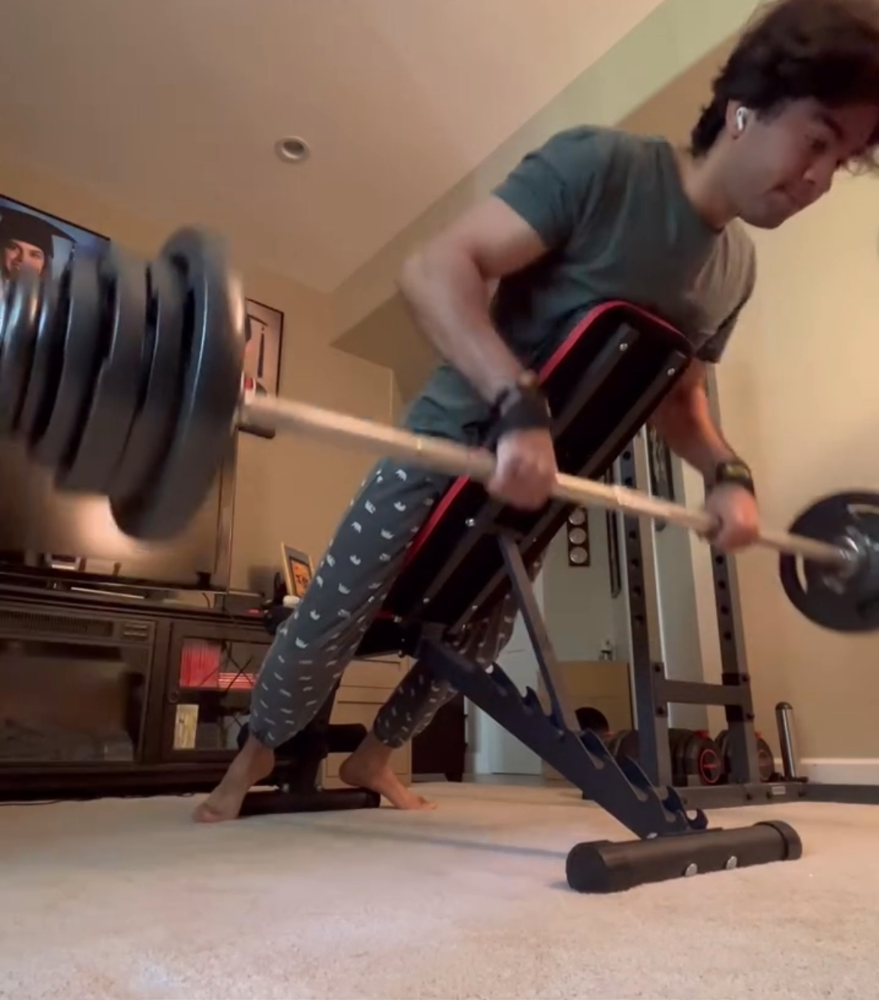
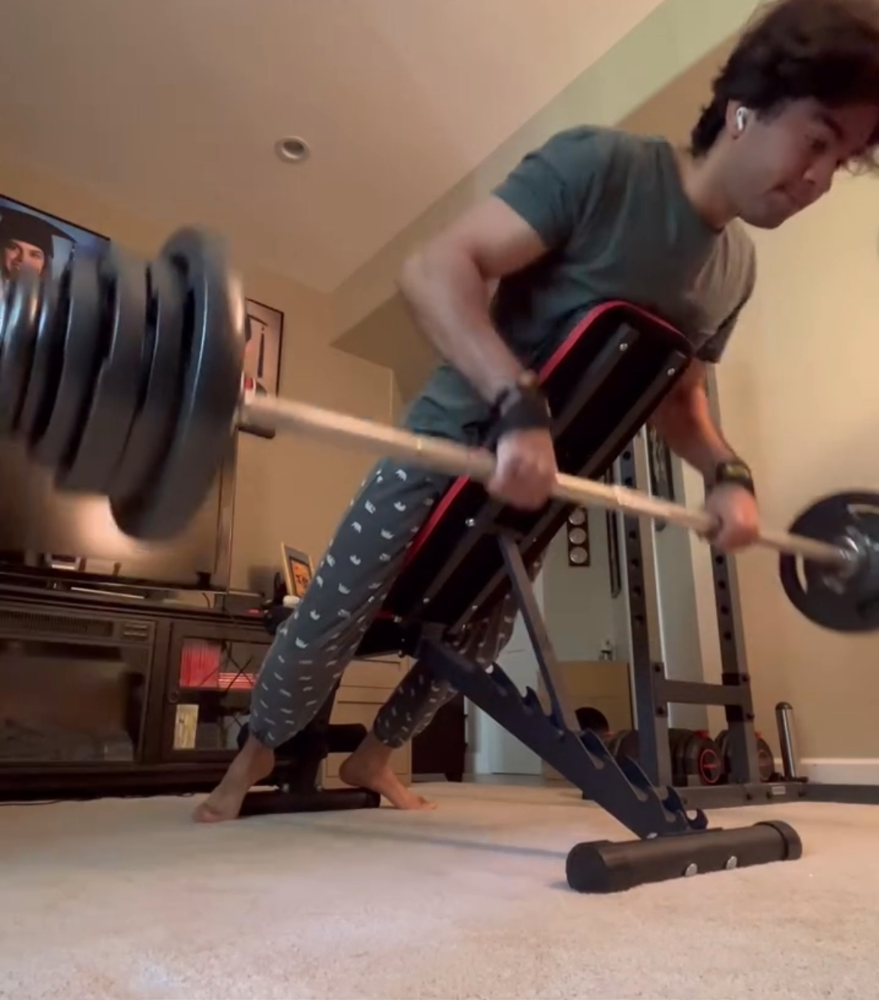

My name is Eric, and I am an aspiring software engineer with a passion for creative problem-solving and a strong foundation in programming. Some of my hobbies include cooking, hiking, weightlifting, and tech! Nice to meet you!


.png)


Along with 3 other team members, we are building a web application tailored to users who love exploring new anime/manga. Yomiru provides users with anime/manga suggestions that tailor to their interests so they can explore new series.
Skills: Front-End Development · Team Planning · Project Planning · Javascript · React · HTML · CSS · Usability Testing
Link to RepoBuilt a full-stack, fully functioning character generator for the popular role-playing game, allowing for ease of access for new players and returning players to make a character in very little time.
Skills: Full-Stack Development · Project Planning · Java · Java Springboot · Project Management
Link to RepoAlong with 3 other team members, built an expense management app prototype tailored to people who use online banking on their mobile device(s), using data collected from interviews and usability studies with real participants. Prioritizes efficient ease of use & shows analysis and activity of bank account activity.
Skills: Teamwork · HTML · Cascading Style Sheets (CSS) · Javascript · Interviewing · Usability Testing